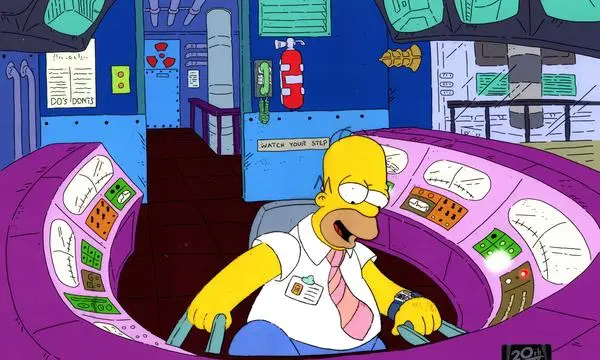

Im Rahmen unserer ganzheitlich integrierten, mehrfach redundanten und selbstverständlich normenkonformen Sicherheitsarchitektur gewährleisten wir ein Höchstmaß an struktureller, technischer und emotionaler Stabilität. Unsere Systeme greifen ineinander wie präzise aufeinander abgestimmte Zahnräder deutscher Ingenieurskunst – überwacht, dokumentiert und bei Bedarf mit beruhigender Ernsthaftigkeit kommentiert. Nachfolgend finden Sie eine Auswahl jener sicherheitsrelevanten Einrichtungen, die nicht nur dem Schutz von Mensch und Umwelt dienen, sondern auch der Aufrechterhaltung geordneter Betriebsheiterkeit.
Nachfolgend präsentieren wir eine tabellarische Übersicht ausgewählter sicherheitstechnischer Leistungsparameter im Rahmen unseres mehrstufigen, interdisziplinär validierten Gesamtschutzkonzeptes. Die aufgeführten Kennzahlen basieren auf streng überwachten Messverfahren, normierten Erfahrungswerten sowie situativ erhobenen Gefühlsschätzungen gemäß hausinterner Richtlinie 08/15-B. Sämtliche Angaben dienen der transparenten Darstellung betrieblicher Exzellenz und können bei Bedarf mit überzeugtem Nicken bestätigt werden.
| Sicherheitssystem | Technische Spezifikation | Zertifizierter Wirkungsgrad |
|---|---|---|
| Kaffee-Notfall-System (KNS) | Automatische Aktivierung bei < 1,2 Tassen pro Stunde | 99,9 % erhöhte Wachsamkeit* |
| Panikschildkröten-Protokoll | Systemverlangsamung auf 0,5 km/h Denkgeschwindigkeit | 100 % weniger hektische Entscheidungen |
| Großer Roter Knopf | Durchmesser: maximal beruhigend | 87 % subjektives Sicherheitsgefühl |